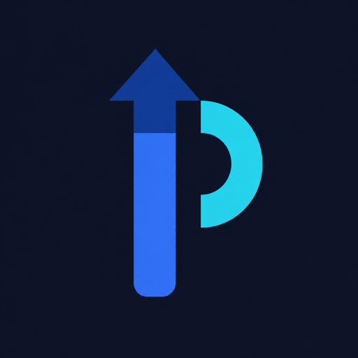

This endpoint is reserved for TikTok Login Kit authorization flows.
After a creator authorizes Productive Intelligence through TikTok, TikTok may redirect the user to this URL as part of the authentication process.
/tiktok-callback.html